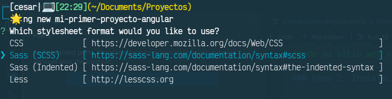
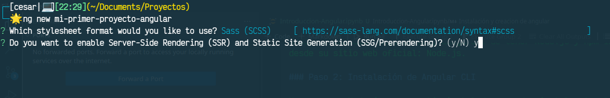
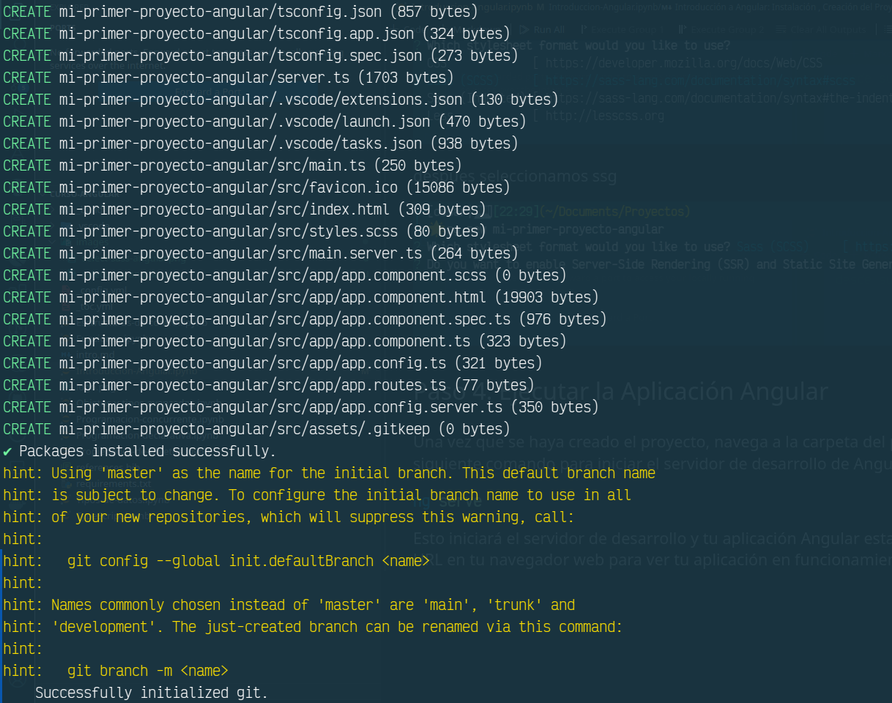
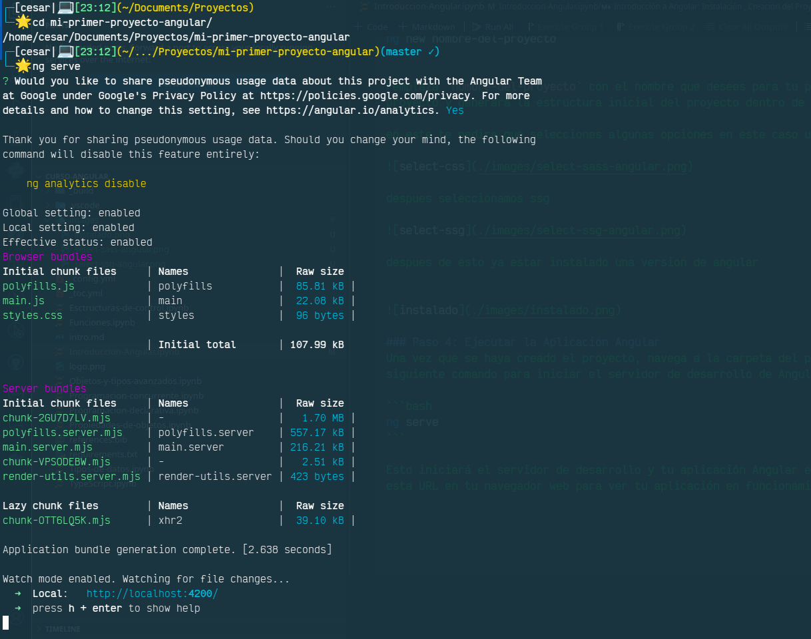
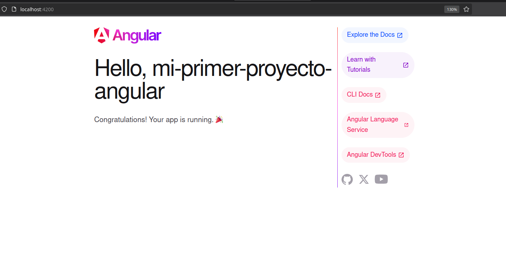
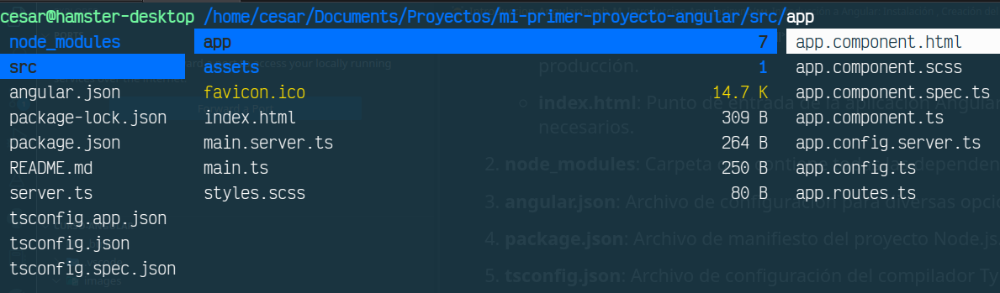

Introducción a Angular: Instalación , Creación del Proyecto y estructura de carpetas#
Angular es un framework de desarrollo de aplicaciones web creado por Google que permite construir aplicaciones de una sola página (SPA) de manera rápida y eficiente. Para comenzar a trabajar con Angular, primero necesitas instalar Angular CLI (Command Line Interface), que es una herramienta de línea de comandos que facilita la creación, el desarrollo y el despliegue de aplicaciones Angular.
Instalación y creacion de angular#
Paso 1: Instalación de Node.js y npm#
Antes de instalar Angular CLI, asegúrate de tener Node.js y npm instalados en tu computadora. Puedes descargar e instalar Node.js desde su sitio web oficial: Node.js.
Paso 2: Instalación de Angular CLI#
Una vez que Node.js y npm estén instalados, puedes instalar Angular CLI globalmente en tu sistema utilizando npm. Abre tu terminal o línea de comandos y ejecuta el siguiente comando
npm install -g @angular/cli
Este comando instalará Angular CLI de forma global en tu sistema, lo que te permitirá acceder a él desde cualquier ubicación en tu computadora.
Paso 3: Creación de un Nuevo Proyecto Angular#
Después de instalar Angular CLI, puedes crear un nuevo proyecto Angular utilizando el comando ng new. Abre tu terminal o línea de comandos, navega hasta la ubicación donde deseas crear tu proyecto y ejecuta el siguiente comando:
ng new nombre-del-proyecto
remplaza nombre-del-proyecto con el nombre que desees para tu proyecto. Angular CLI creará una nueva carpeta con el nombre del proyecto y generará la estructura inicial del proyecto dentro de ella.
en este te pedira que selecciones algunas opciones en este caso usaremos sass como editor de hoja de estilos

despues seleccionamos ssg

despues de esto ya estar instalado una version de angular

Paso 4: Ejecutar la Aplicación Angular#
Una vez que se haya creado el proyecto, navega a la carpeta del proyecto utilizando cd nombre-del-proyecto y luego ejecuta el siguiente comando para iniciar el servidor de desarrollo de Angular:
ng serve

Esto iniciará el servidor de desarrollo y tu aplicación Angular estará disponible en la url especificada por la salida. Puedes abrir esta URL en tu navegador web para ver tu aplicación en funcionamiento.
en este caso el servidor corre en http://localhost:4200/
si accedemos podremos ver esto

Estructura de Carpetas en un Proyecto de Angular#

src: Carpeta principal que contiene todo el código fuente de la aplicación.
app: Carpeta donde reside la mayor parte del código de la aplicación, incluyendo componentes, módulos y servicios.
assets: Carpeta para almacenar archivos estáticos como imágenes, fuentes, y archivos de estilos CSS.
index.html: Punto de entrada de la aplicación Angular. Se carga el primer componente y se enlazan los archivos CSS y scripts necesarios.
environments: Carpeta que contiene archivos de configuración para diferentes entornos de la aplicación, como desarrollo y producción. en las versiones mas modernas de angular no se encuentra y se recomienda crearla en caso de necesitarla
node_modules: Carpeta que contiene todas las dependencias de terceros instaladas mediante npm.
angular.json: Archivo de configuración para diversas opciones de construcción y desarrollo de la aplicación Angular.
package.json: Archivo de manifiesto del proyecto Node.js. Contiene metadatos del proyecto, dependencias, scripts, etc.
tsconfig.json: Archivo de configuración del compilador TypeScript. Define las opciones de compilación para el proyecto TypeScript.
README.md: Documento de texto que proporciona información sobre el proyecto, como descripción, instrucciones de instalación y uso.